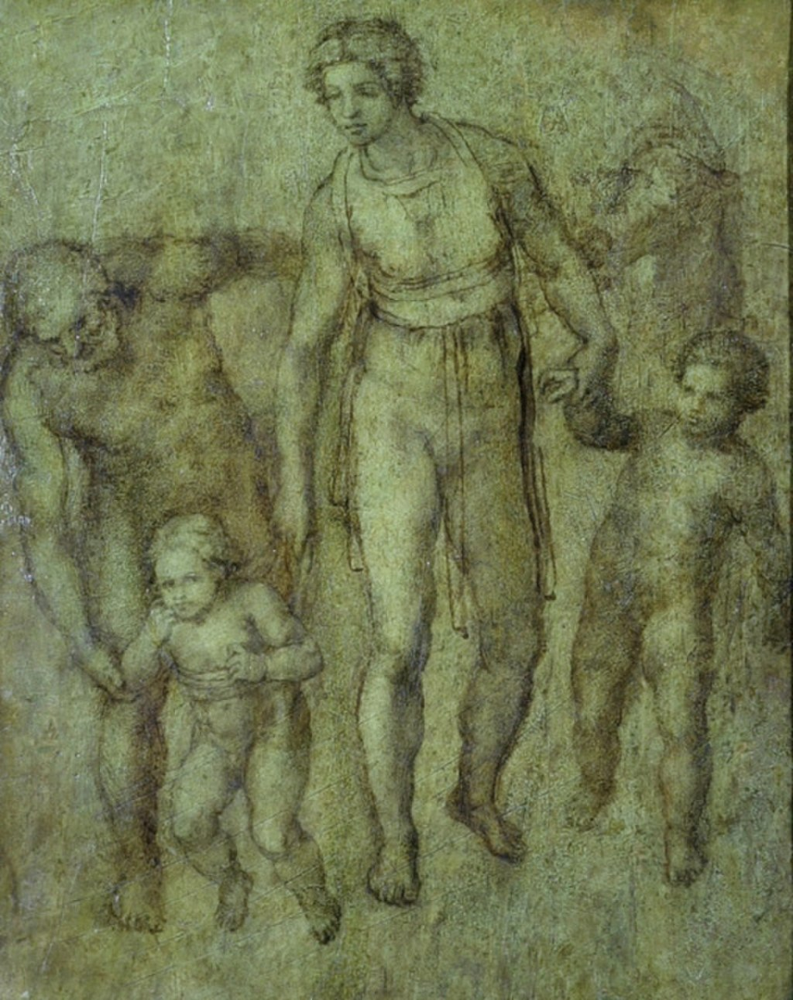

<head>
<meta charset="UTF-8" />
<meta name="keywords" content="drawing, painting" />
<meta name="description" content="drawings by Sunjy" />
<title>Sunjy</title>
<link rel="shortcut icon" type="image/x-icon" href="../../mImages/mCommon/favicon.ico" media="screen" />
<link rel="stylesheet" type="text/css" href="../../mCsses/mCommon/mCssA.css" />
<link rel="stylesheet" type="text/css" href="../../mCsses/mCommon/mCssB.css" />
<link rel="stylesheet" type="text/css" href="../../mCsses/mCommon/mCssC.css" />
<link rel="stylesheet" type="text/css" href="../../mCsses/mCommon/mCssD.css" />
<link rel="stylesheet" type="text/css" href="../../mCsses/mContent/mCssA.css" />
<link rel="stylesheet" type="text/css" href="../../mCsses/mContent/mCssB.css" />
<link rel="stylesheet" type="text/css" href="../../mCsses/mContent/mCssC.css" />
<link rel="stylesheet" type="text/css" href="../../mCsses/mContent/mCssD.css" />
</head>
<script type="text/javascript" src="../../mScripts/mContent/mContentAA.js" /></script>
<script type="text/javascript" src="../../mScripts/mContent/mContentAB.js" /></script>
<script type="text/javascript" src="../../mScripts/mContent/mContentAC.js" /></script>
<script type="text/javascript" src="../../mScripts/mContent/mContentAD.js" /></script>
<script type="text/javascript"></script> 
<script type="text/javascript">
document.write('<div class="mImgAbsolute"></div>');
/*
document.write('<p class="mFontSizeBColor" />From a white paper...</p>');
document.write('<table class="center"><tr><td>');
document.write('');
document.write('</td></tr></table>');
*/
</script>


<script type="text/javascript">
document.write('<p class="mFontSizeBColor" />Holy Family with St John the Baptist</p>');
document.write('<p class="mFontSizeSColor" />“The Holy Family with St John the Baptist” is a painting that was created around 1540 by Michelangelo or his close circle. The unfinished drawing using brown brush wash on poplar wood is laid out only in the outer outlines.<br><br>The composition depicts a striding mother, who guides the Christ Child, who is standing by her feet, standing with the use of a walking aid. In her the other hand, she holds the boy St. John walking next to her.<br><br>Joseph is shown bent over the Christ child, as he provides additional support while he is learning to walk. The depiction may be commemorating the return of the Holy Family from Egypt.<br><br>The work is closely associated with Michelangelo, to whom the picture was previously assigned. Some experts considered it a copy by Michelangelo’s circle of an original lost draft by Michelangelo from the 1640s.<br><br>Yet, the unusually high quality of the artwork encourages other experts to attribute the work directly to Michelangelo.<br><br>The picture was originally part of the Royal Collection in Naples, and today it is part of the Ashmolean Museum in Oxford, which acquired it in 1846.<br><br>“Holy Family with St John the Baptist” can be compared to Michelangelo’s Doni Tondo (1504–1506) as a reference point to Michelangelo’s style.<br></p>');
document.write('<table class="center" /><tr><td>');
document.write('<br>The composition depicts a striding mother, who guides the Christ Child, who is standing by her feet, standing with the use of a walking aid. In her the other hand, she holds the boy St. John walking next to her.<br><br>Joseph is shown bent over the Christ child, as he provides additional support while he is learning to walk. The depiction may be commemorating the return of the Holy Family from Egypt.<br><br>The work is closely associated with Michelangelo, to whom the picture was previously assigned. Some experts considered it a copy by Michelangelo’s circle of an original lost draft by Michelangelo from the 1640s.<br><br>Yet, the unusually high quality of the artwork encourages other experts to attribute the work directly to Michelangelo.<br><br>The picture was originally part of the Royal Collection in Naples, and today it is part of the Ashmolean Museum in Oxford, which acquired it in 1846.<br><br>“Holy Family with St John the Baptist” can be compared to Michelangelo’s Doni Tondo (1504–1506) as a reference point to Michelangelo’s style.<br>" />');
document.write('</td></tr></table>');
</script>


